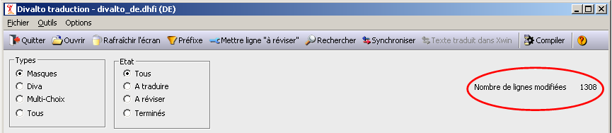

Un même libellé en langue de base peut être présent de nombreuses fois dans le dictionnaire.
Le choix <Propager les saisies> du menu <Options> permet de ne saisir qu'une seule fois la traduction d'un libellé.
Les zones à renseigner sont :
|
Propager les modifications |
Active ou désactive la propagation des modifications. |
|
Propager pour |
Indique quelles sont les lignes qui seront modifiées lors d'une propagation. |
|
Propager |
Indique dans quel cas il faut propager une modification. |
|
Nouvel état des lignes modifiées |
Nouvel état affecté aux lignes modifiées par la propagation. |
Le nombre de lignes modifiées après chaque saisie est affiché.

Remarques
Les lignes marquées Terminées ne sont jamais modifiées par une propagation.
La validation d'une traduction par <F12> déclenche la propagation de la modification, même si l'option Propager les modifications n'est pas sélectionnée. Les règles de propagation sont les mêmes que pour la propagation automatique.